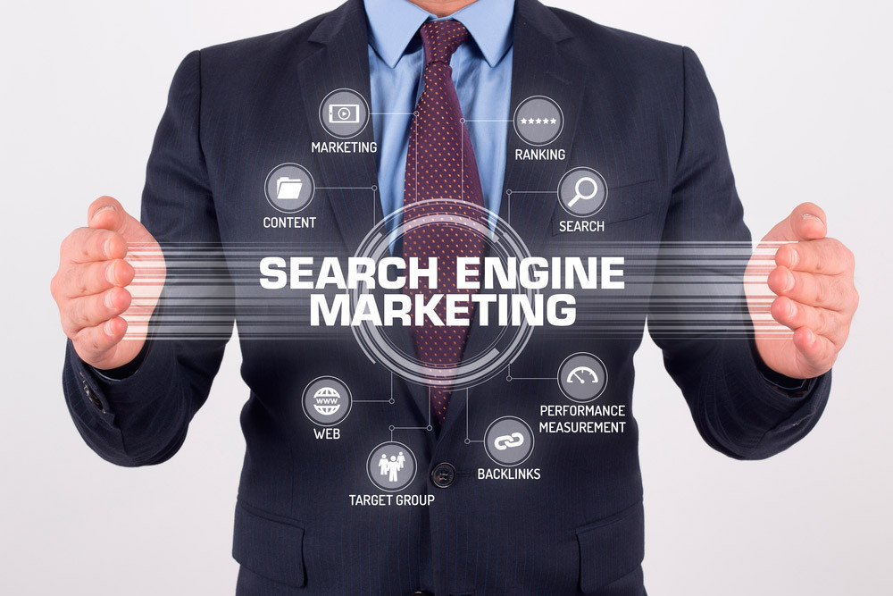
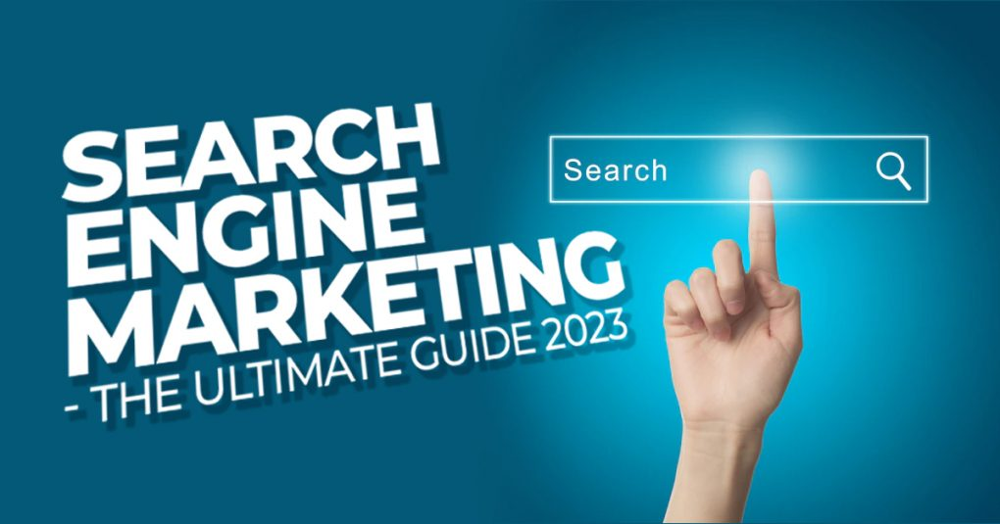

10. ผู้เชี่ยวชาญด้าน SEM (SEM Specialist)

ตั้งแต่ช่วงโควิดที่ผ่านมาการค้าขายออนไลน์ก็ได้เติบโตอย่างก้าวกระโดด เพราะในช่วงที่ทุกคนต้องกักตัวอยู่บ้านตามมาตรการ Social distancing ทำให้ผู้คนหันมาช้อปปิ้งออนไลน์มากขึ้น จนกลายเป็นความคุ้นเคยที่หลายคนเลือกที่จะซื้อของผ่านช่องทางออนไลน์มากกว่าไปซื้อที่หน้าร้านจริง ๆ แล้วด้วยซ้ำ ทำให้หน้าร้านออนไลน์กลายมามีบทบาทสำคัญที่ทำให้ธุรกิจเจริญเติบโต แต่การจะทำให้หน้าร้านออนไลน์ ไม่ว่าจะเป็นเว็บไซต์ หรือหน้าเพจ Facebook ของคุณเป็นที่รู้จักก็ไม่ใช่เรื่องง่าย เพราะคุณต้องอาศัยความรู้เรื่อง Digital Marketing เข้ามาช่วยเพื่อให้หน้าเพจหรือหน้าเว็บของคุณเป็นที่รู้จักมากขึ้น แต่เรื่องเหล่านี้จะไม่ใช่เรื่องยากอีกต่อไป หากคุณรู้จักการทำการตลาดออนไลน์ที่เรียกว่า “SEM”
SEM คืออะไร
SEM ย่อมาจาก Search Engine Marketing ซึ่งก็คือ การทำการตลาดออนไลน์ (Online Marketing) ผ่านเครื่องมือค้นหาบนอินเตอร์เน็ต หรือเว็บ Search Engine อย่าง Google หรือ Yahoo ที่ทำหน้าที่ค้นหาเว็บไซต์ให้ตรงกับคำที่คุณกำลังค้นหาอยู่ โดยการทำ SEM ที่ดีและมีประสิทธิภาพจะทำเว็บไซต์ติดอันดับต้น ๆ และอยู่ในหน้าแรก ๆ ของการค้นหา ซึ่งก็จะทำให้เข้าถึงลูกค้าได้มากขึ้น และยังเพิ่มโอกาสในการคลิกเข้าดูเว็บไซต์มากขึ้นกว่าเดิมอีกด้วย วันนี้เราจะขอพูดถึงการทำ SEM ใน search engine ชื่อดังอย่าง Google เพราะเป็นเว็บ search engine ที่คนไทยนิยมใช้กันมากที่สุด โดยเงื่อนไขที่ Google ใช้จัดอันดับการค้นหานั้นมีอยู่ด้วยกัน 2 ข้อ ก็คือ
1. การประเมินคุณภาพเว็บไซต์ วิธีนี้ Google จะให้ Google Bot ทำหน้าที่เข้ามาเก็บข้อมูลในเว็บไซต์ของเราและให้คะแนนตามหลักเกณฑ์ที่วางไว้ และทำการจัดอันดับเว็บไซต์โดยอัตโนมัติ
2. การมี Keyword ที่ถูกค้นหา หมายถึง หากเว็บไซต์ของเรามีคำที่เป็น Keyword ที่คนนิยมค้นหาอยู่ หรือมี Keyword ที่เกี่ยวข้องกับคำที่กำลังถูกค้นหา Google ก็จะจัดการแสดงหน้าเว็บของเราให้ขึ้นมาอยู่ในหน้าแรก ๆ หรือันดับต้น ๆ ของการค้นหา
ทำการตลาด SEM มีกี่แบบ
การทำการตลาดด้วย SEM มีอยู่ 2 แบบด้วยกัน นั้นก็คือ Pay per Click (PPC) หรือ Paid Search ซึ่งก็คือการซื้อพื้นที่โฆษณาบน search engine ผ่านการประมูล keyword และอีกรูปแบบก็คือ SEO (Search Engine Optimization) หรือ Organic Search ซึ่งอาศัยการปรับแต่งเว็บไซต์และเนื้อหาในเว็บเพื่อให้ได้คะแนนคุณภาพจนทำให้เว็บไซต์ติดอันดับเองโดยไม่ต้องเสียเงินซื้อพื้นที่โฆษณา ลองมาเจาะลึกการทำ SEM ทั้ง 2 รูปแบบ รวมทั้งรู้จักข้อดีข้อเสียของแต่ละแบบกันให้ดีขึ้นไปอีกนิดดีกว่า
1. Pay Per Click หรือ PPC
คือการจ่ายเงินเพื่อซื้อพื้นที่โฆษณาบนเว็บ Search Engine ในพื้นที่ที่ถูกกำหนดไว้โดยเฉพาะ (Paid Search) ลองสังเกตเวลาค้นหาใน Google เมื่อผลการค้นหาแสดงขึ้น ชื่อเว็บไซต์ที่ปรากฏขึ้นในหน้าแรก อาจจะขึ้นเป็นอันดับแรกบนสุด หรืออันดับท้ายสุดในหน้าแรกก็ได้ และมีสัญลักษณ์ AD อยู่หน้าชื่อเว็บไซต์นั้น ๆ นั้นคือ เว็บไซต์ที่ซื้อ Paid Search โดยที่เว็บไซต์จะต้องทำการประมูลราคา Keyword ที่คิดว่าคนจะค้นหาเพื่อให้เว็บไซต์ของตัวเองขึ้นอยู่ในอันดับแรก ๆ ของการค้นหา และต้องจ่ายเงินค่าโฆษณาตามจำนวนคลิกที่มีคนกดเข้าเว็บไซต์ แต่ถ้าไม่มีคนคลิกเข้าเว็บ Google ก็จะไม่ได้เก็บเงินค่าพื้นที่โฆษณานั้นแต่อย่างใด
ข้อดี เพียงแค่จ่ายเงินเพื่อประมูล Keyword ที่ต้องการหรือที่คิดว่าคนจะค้นหามากที่สุด ก็สามารถทำให้เว็บไซต์ของคุณติดอันดับต้น ๆ ของการค้นหาได้แล้ว โดยที่ไม่ต้องเสียเวลามานั่งปรับแต่งเว็บไซต์หรือคอนเทนต์ในเว็บไซต์ให้ตรงตามเกณฑ์เว็บไซต์คุณภาพตามข้อกำหนดของ Google แถมพื้นที่แสดงเว็บไซต์ที่เป็น AD ยังเป็นตำแหน่งที่สามารถมองเห็นได้ง่าย สะดุดตา และน่าคลิกเข้าไปดูต่อ ถือว่าเป็นวิธีที่ง่าย สะดวก และรวดเร็ว เพียงแค่ต้องเข้าใจว่าจะประมูล Keyword คำไหนเพื่อให้มีการแสดงผลการค้นหาที่มีประสิทธิภาพมากที่สุด นอกจากนี้ยังจะได้ข้อมูลการค้นหาและเข้าชมเว็บไซต์มาเพื่อวิเคราะห์หา insight และนำไปพัฒนาทั้งเว็บไซต์และวิธีในการทำการตลาดออนไลน์ให้ดีขึ้นได้อีกด้วย
ข้อเสีย Keyword ในแต่ละคำมีราคาในการประมูลไม่เท่ากัน หากคำไหนเป็นที่นิยม มีคนค้นหามาก มีคนอยากประมูลคำนี้เหมือนกัน ก็จะทำให้ราคาในการประมูลสูงขึ้นไปด้วยเป็นเงาตามตัว นอกจากความ popular ที่ถูกนำมาใช้กำหนดราคาประมูล keyword แล้ว ช่วงเวลาก็มีผลต่อราคาประมูล keyword ด้วย นอกจากนี้ถ้าคุณเลิกจ่ายโฆษณาแล้ว เว็บไซต์ของคุณก็จะหายไปจากพื้นที่โฆษณาในหน้าค้นหาทันที และอันดับของเว็บไซต์ก็อาจจะตกลงทันที ทำให้ไม่สามารถหวังผลในระยะยาว ทำให้ PPC เหมาะกับการทำการตลาดสินค้าที่มีขายตามเทศกาล สินค้าตามเทรนด์ หรือโปรโมชั่นใหม่ที่ต้องการให้ผู้คนรับรู้ และเหมาะกับธุรกิจที่มีคู่แข่งเยอะ รวมถึงเหมาะกับเจ้าของแบรนด์ที่มีงบประมาณทำโฆษณาพอสมควร
1. SEO (Search Engine Optimization)
คือการทำให้เว็บไซต์ของคุณติดอันดับต้น ๆ ของการค้นหาผ่านการปรับแต่งเว็บไซต์ให้ได้คุณภาพผ่านหลักเกณฑ์การให้คะแนนเว็บไซต์ของ Google BOT โดยที่ไม่ต้องเสียเงินเพื่อซื้อพื้นที่โฆษณา โดยมีเทคนิคการทำ SEO 3 รูปแบบดังนี้
• On Page SEO คือ การแทรก Keyword ลงไปในส่วนต่าง ๆ ของเว็บ ซึ่งส่วนใหญ่แล้วมักจะแทรก SEO ผ่านเมนู Blog ซึ่งเป็นพื้นที่สำหรับบทความต่าง ๆ โดยที่ปริมาณของ Keyword จะต้องมีในปริมาณที่พอดี ไม่มากไปหรือไม่น้อยไป บทความใน Blog ก็ต้องเป็นบทความที่มีเนื้อหามีคุณภาพ เขียนให้น่าอ่าน เนื้อหาอ่านง่าย สามารถตอบคำถาม Keyword ที่คนค้นหาได้ เพื่อให้ Google Bot สามารถเข้ามาประเมิณผลและเก็บคะแนนได้ง่ายขึ้น
• Off Page SEO คือ การลิงก์บทความหนึ่งกับอีกบทความหนึ่งที่มีความเกี่ยวข้องในเว็บไซต์ของคุณเอง หรือการให้เว็บไซต์อื่นใส่ลิงก์เว็บของคุณ เพื่อเป็นการเพิ่มโอกาสในการมองเห็นและกดคลิกเข้ามาชมเว็บไซต์ของคุณผ่านเว็บไซต์อื่น และยังช่วยเพิ่มความน่าเชื่อถือให้กับเว็บไซต์ของคุณเองได้อีกด้วย หลักสำคัญที่ต้องยึดไว้ก็คือ เนื้อหาในบทความที่เชื่อมโยงหรือลิงก์กัน จะต้องเป็นเนื้อหาที่เกี่ยวข้องกันเท่านั้น ไม่เช่นนั้น Google Bot จะคิดว่าเป็น Spam และเว็บไซต์จะถูกตัดคะแนนทันที
• Technical SEO คือ การปรับแต่งเว็บไซต์ทางเทคนิคเพื่อให้คะแนนการประเมิณจาก Google Bot สูงขึ้น เช่น การปรับให้หน้าเพจโหลดเร็วขึ้น ปรับ User Interface ให้แสดงผลบนหน้าจอมือถือหรือ Smartphone ให้เหมาะสมสวยงาม การรักษาความปลอดภัยของข้อมูลบนเว็บและข้อมูลผู้เข้าชม เป็นต้น
ข้อดี ประหยัด ไม่ต้องเสียค่าโฆษณา เพียงแค่ทำเว็บไซต์และทำเนื้อหาของเว็บไซต์ให้ดีตรงตามมาตรฐานการประเมิณของ Google Bot ก็จะทำให้เว็บไซต์ของคุณได้คะแนนสูงและถูกแสดงผลการค้นหาในอันดับต้น ๆ ได้ แถมยังหวังผลในระยะยาวได้หากเว็บไซต์ของคุณดีได้มาตรฐานอย่างต่อเนื่องและอยู่ในความสนใจของผู้ใช้งานตลอดเวลา
ข้อเสีย นอกจาก SEO จะต้องใช้ระยะเวลานานกว่าที่จะเห็นผลแล้ว หลักเกณฑ์การให้คะแนนเว็บไซต์ของ Google Bot มีการเปลี่ยนแปลงอยู่ตลอดเวลา และไม่มีการเปิดเผยว่าเกณฑ์เหล่านั้นมีอะไรบ้าง ทำให้ต้องหมั่นคอยติดตามข่าวสารและอัปเดตข้อมูลความรู้เกี่ยวกับการให้คะแนนเว็บไซต์ของ Google Bot อยู่เสมอ ทำให้ SEO เป็นวิธีที่เหมาะกับสินค้าและบริการทั่วไปที่มีคนต้องการซื้ออยู่ตลอดเวลา สามารถเขียนบทความที่สอดแทรกการขายได้ และต้องการให้เว็บไซต์ติดอันดับในระยะยาว
ไม่ว่าจะเป็นการทำ Online Marketing แบบไหนก็มีข้อดีข้อเสียต่างกันไป ขอให้เจ้าของกิจการหรือนักการตลาดเช่นคุณ เลือกวิธีที่จะโปรโมตเว็บไซต์ให้เหมาะสมกับสินค้าและบริการ รวมถึงเป้าหมายและงบประมาณของคุณเอง เพียงเท่านี้ไม่ว่าจะเป็น Paid Search หรือว่า Organic Search ก็จะให้ผลลัพธ์ตามความคาดหวังของคุณได้แล้ว
